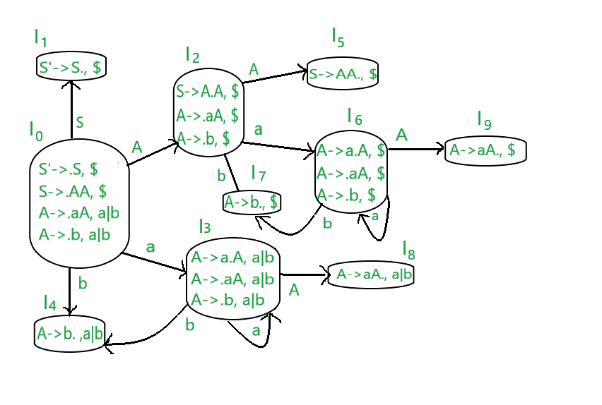

LALR Parser :
LALR Parser is lookahead LR parser. It is the most powerful parser which can handle large classes of grammar. The size of CLR parsing table is quite large as compared to other parsing table. LALR reduces the size of this table.LALR works similar to CLR. The only difference is , it combines the similar states of CLR parsing table into one single state.
The general syntax becomes [A->∝.B, a ]
where A->∝.B is production and a is a terminal or right end marker $
LR(1) items=LR(0) items + look ahead
How to add lookahead with the production?
CASE 1 –
A->∝.BC, a
Suppose this is the 0th production.Now, since ‘ . ‘ precedes B,so we have to write B’s productions as well.
B->.D [1st production]
Suppose this is B’s production. The look ahead of this production is given as- we look at previous production i.e. – 0th production. Whatever is after B, we find FIRST(of that value) , that is the lookahead of 1st production. So, here in 0th production, after B, C is there. Assume FIRST(C)=d, then 1st production become.
B->.D, d
CASE 2 –
Now if the 0th production was like this,
A->∝.B, a
Here,we can see there’s nothing after B. So the lookahead of 0th production will be the lookahead of 1st production. ie-
B->.D, a
CASE 3 –
Assume a production A->a|b
A->a,$ [0th production]
A->b,$ [1st production]
Here, the 1st production is a part of the previous production, so the lookahead will be the same as that of its previous production.
Steps for constructing the LALR parsing table :
- Writing augmented grammar
- LR(1) collection of items to be found
- Defining 2 functions: goto[list of terminals] and action[list of non-terminals] in the LALR parsing table
EXAMPLE
Construct CLR parsing table for the given context free grammar
S-->AA
A-->aA|b
Solution:
STEP1- Find augmented grammar
The augmented grammar of the given grammar is:-
S'-->.S ,$ [0th production]
S-->.AA ,$ [1st production]
A-->.aA ,a|b [2nd production]
A-->.b ,a|b [3rd production]
Let’s apply the rule of lookahead to the above productions.
- The initial look ahead is always $
- Now,the 1st production came into existence because of ‘ . ‘ before ‘S’ in 0th production.There is nothing after ‘S’, so the lookahead of 0th production will be the lookahead of 1st production. i.e. : S–>.AA ,$
- Now,the 2nd production came into existence because of ‘ . ‘ before ‘A’ in the 1st production.
After ‘A’, there’s ‘A’. So, FIRST(A) is a,b. Therefore, the lookahead of the 2nd production becomes a|b.
- Now,the 3rd production is a part of the 2nd production.So, the look ahead will be the same.
STEP2 – Find LR(0) collection of items
Below is the figure showing the LR(0) collection of items. We will understand everything one by one.

The terminals of this grammar are {a,b}
The non-terminals of this grammar are {S,A}
RULES –
- If any non-terminal has ‘ . ‘ preceding it, we have to write all its production and add ‘ . ‘ preceding each of its production.
- from each state to the next state, the ‘ . ‘ shifts to one place to the right.
- In the figure, I0 consists of augmented grammar.
- Io goes to I1 when ‘ . ‘ of 0th production is shifted towards the right of S(S’->S.). This state is the accept state . S is seen by the compiler. Since I1 is a part of the 0th production, the lookahead is same i.e. $
- Io goes to I2 when ‘ . ‘ of 1st production is shifted towards right (S->A.A) . A is seen by the compiler. Since I2 is a part of the 1st production, the lookahead is same i.e. $.
- I0 goes to I3 when ‘ . ‘ of 2nd production is shifted towards the right (A->a.A) . a is seen by the compiler.since I3 is a part of 2nd production, the lookahead is same i.e. a|b.
- I0 goes to I4 when ‘ . ‘ of 3rd production is shifted towards right (A->b.) . b is seen by the compiler. Since I4 is a part of 3rd production, the lookahead is same i.e. a|b.
- I2 goes to I5 when ‘ . ‘ of 1st production is shifted towards right (S->AA.) . A is seen by the compiler. Since I5 is a part of the 1st production, the lookahead is same i.e. $.
- I2 goes to I6 when ‘ . ‘ of 2nd production is shifted towards the right (A->a.A) . A is seen by the compiler. Since I6 is a part of the 2nd production, the lookahead is same i.e. $.
- I2 goes to I7 when ‘ . ‘ of 3rd production is shifted towards right (A->b.) . A is seen by the compiler. Since I6 is a part of the 3rd production, the lookahead is same i.e. $.
- I3 goes to I3 when ‘ . ‘ of the 2nd production is shifted towards right (A->a.A) . a is seen by the compiler. Since I3 is a part of the 2nd production, the lookahead is same i.e. a|b.
- I3 goes to I8 when ‘ . ‘ of 2nd production is shifted towards the right (A->aA.) . A is seen by the compiler. Since I8 is a part of the 2nd production, the lookahead is same i.e. a|b.
- I6 goes to I9 when ‘ . ‘ of 2nd production is shifted towards the right (A->aA.) . A is seen by the compiler. Since I9 is a part of the 2nd production, the lookahead is same i.e. $.
- I6 goes to I6 when ‘ . ‘ of the 2nd production is shifted towards right (A->a.A) . a is seen by the compiler. Since I6 is a part of the 2nd production, the lookahead is same i.e. $.
- I6 goes to I7 when ‘ . ‘ of the 3rd production is shifted towards right (A->b.) . b is seen by the compiler. Since I6 is a part of the 3rd production, the lookahead is same i.e. $.
STEP 3 –
Defining 2 functions: goto[list of terminals] and action[list of non-terminals] in the parsing table.Below is the CLR parsing table

Once we make a CLR parsing table, we can easily make a LALR parsing table from it.
In the step2 diagram, we can see that
- I3 and I6 are similar except their lookaheads.
- I4 and I7 are similar except their lookaheads.
- I8 and I9 are similar except their lookaheads.
In LALR parsing table construction , we merge these similar states.
- Wherever there is 3 or 6, make it 36(combined form)
- Wherever there is 4 or 7, make it 47(combined form)
- Wherever there is 8 or 9, make it 89(combined form)
Below is the LALR parsing table.

Now we have to remove the unwanted rows
- As we can see, 36 row has same data twice, so we delete 1 row.
- We combine two 47 row into one by combining each value in the single 47 row.
- We combine two 89 row into one by combining each value in the single 89 row.
The final LALR table looks like the below.